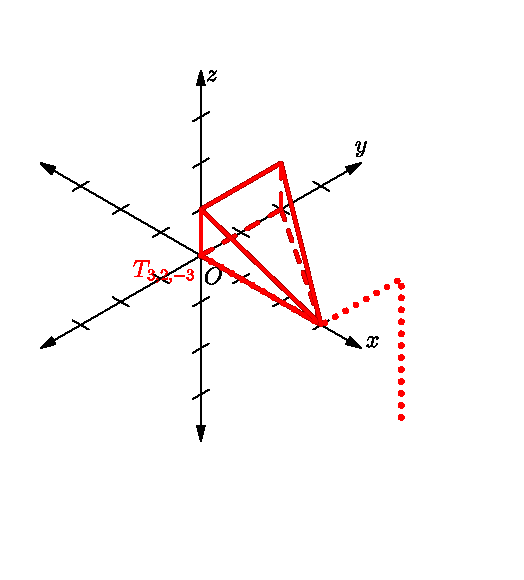
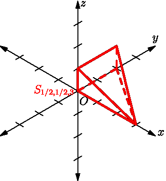
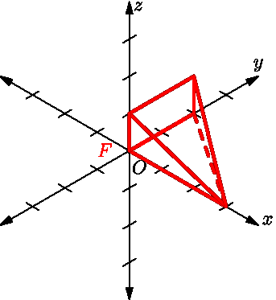
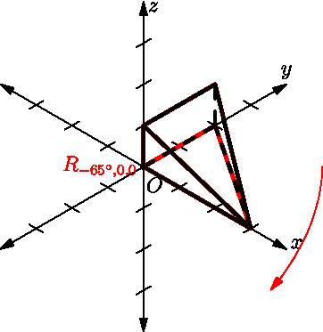
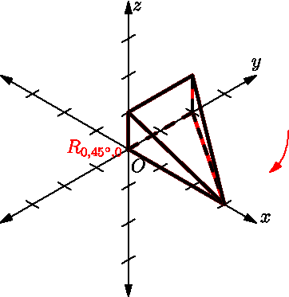
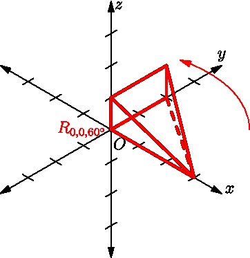
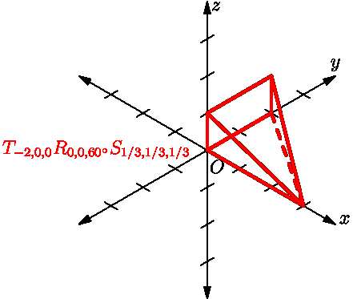

Chapter 4. Three Dimensions
This page contains links to all resources mentioned in Chapter 4 of the textbook.
Practice Problems¶
Tip
I highly recommend the practice problems on vectors contained at the Learning Lesson website. I mentioned these same problems in Chapter 2, but only some were applicable then, because you had not yet learned about three dimensional space. Now, all such problems are good practice.
POV File of Three Keys Scene¶
Download the file three-keys.pov here. This will render the scene shown in the text, and the source can be inspected to see how it was created.
Frank Hanish's 3D Transformations Applet¶
A Java applet for experimenting with 3D affine transformations
Warning
Feel free to ignore the grid of numbers on the bottom of that page until you reach Chapter 5 in the textbook.
I still should add here a tutorial on this applet. It is nontrivial, because it requires understanding a stack of matrices onto which you push values.
Page of 3D Axes (PDF)¶
For doing the homework for this chapter, you will need to draw some objects in three-dimensional coordinate systems. Rather than make you draw them yourself, this page will save you time and help keep your work neat.
Animations of 3D Affine Transformations¶
Translation of a wedge-shaped object by \langle 3,2,-3\rangle, T_{3,2,-3}¶

Scaling the same object by factors of ½, ½, and 3, in x, y, and z, respectively, S_{1/2,1/2,3}¶

Reflecting the same object through the yz plane, F¶

Rotation of the same object by -65^\circ around the x axis, R_{-65^\circ,0,0}¶

Rotation of the same object by 45^\circ around the y axis, R_{0,45^\circ,0}¶

Rotation of the same object by 60^\circ around the z axis, R_{0,0,60^\circ}¶

Combination of several transformations applied to the same object in sequence, T_{-2,0,0}R_{0,0,60^\circ}S_{1/3,1/3,1/3}¶
